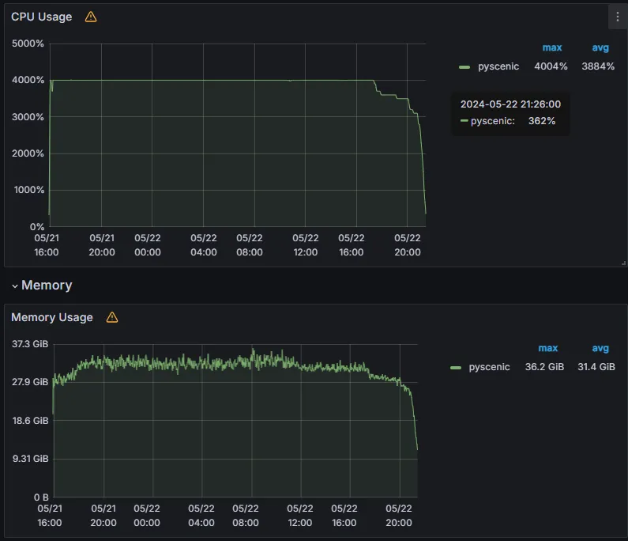
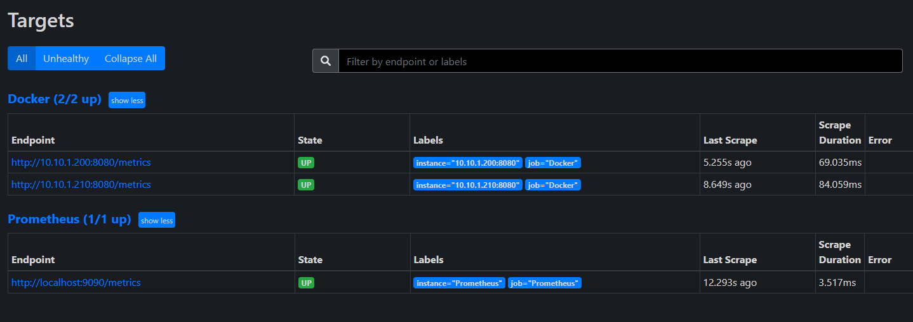
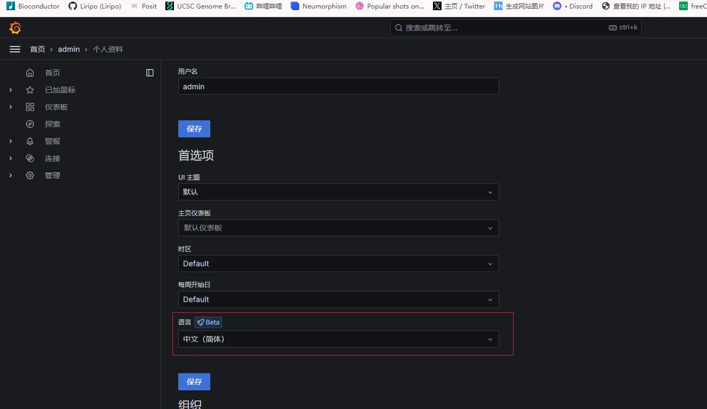
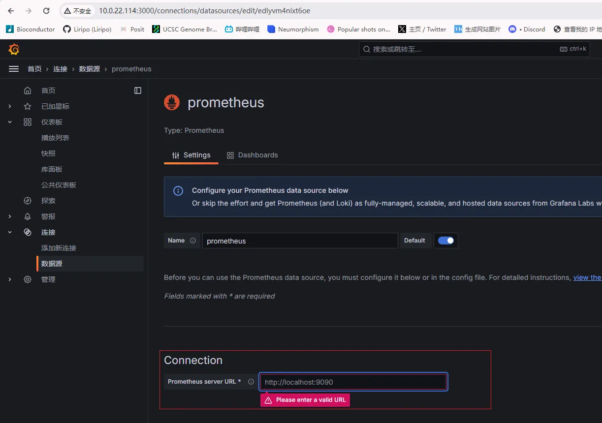
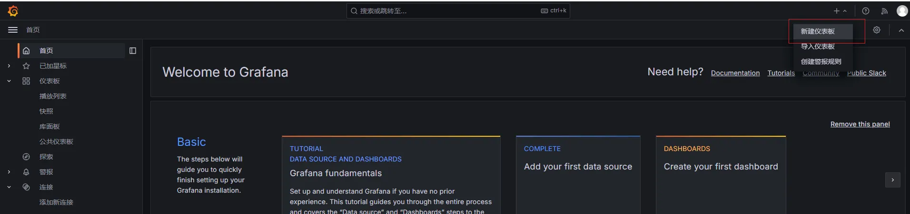
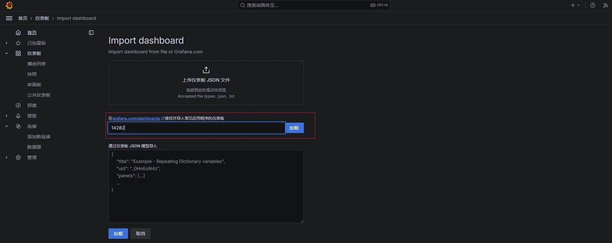
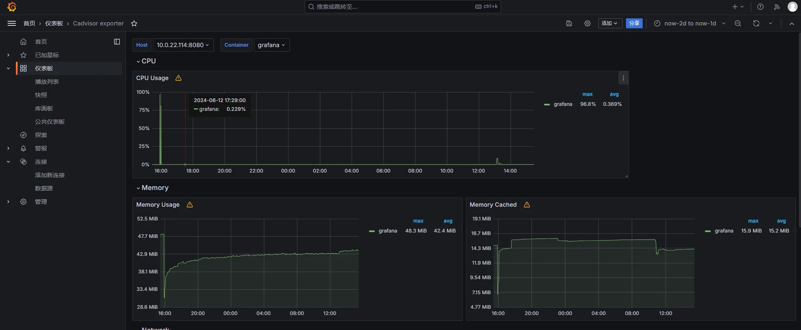

1 简介
为了准确测量软件运行所需资源，可以在 docker 容器中运行软件，并监控它的资源消耗。

为了获取上图结果，我们需要下面三个程序：
cAdvisor：用于收集正在运行的容器资源使用和性能信息。Prometheus：由于 cAdvisor 只展示两分钟的资源消耗结果，需要部署这个软件进行存储 cAdvisor 的结果。Grafana：开源可视化系统，可以对 Prometheus 存储的资源进行可视化。
2 cAdvisor 部署
对需要监控的主机启动如下容器：
sudo docker run \
--volume=/:/rootfs:ro \
--volume=/var/run:/var/run:ro \
--volume=/sys:/sys:ro \
--volume=/var/lib/docker/:/var/lib/docker:ro \
--volume=/dev/disk/:/dev/disk:ro \
--publish=8080:8080 \
--detach=true \
--name=cadvisor \
--privileged \
--device=/dev/kmsg \
gcr.io/cadvisor/cadvisor
Tip
<ip> 记得更换为自己的 ip 地址。
cAdvisor 默认在 8080 端口运行，主页面：http://<ip>:8080 。
http://<ip>:8080/metrics 端口可以看到 prometheus 所需要的信息。
3 prometheus 部署
当前文件夹下新建配置文件prometheus.yml：
prometheus.yml
docker run --name prometheus -d \
-p 9090:9090 \
-v ./prometheus.yml:/etc/prometheus/prometheus.yml \
prom/prometheus \
--config.file=/etc/prometheus/prometheus.yml \
--web.enable-lifecycle \
--storage.tsdb.retention.time=15d
# 参数解释
--config.file，指定配置文件
--storage.tsdb.path，指定数据存储目录
--storage.tsdb.retention，指定数据过期时间，默认 15 天
--query.max-concurrency，最大支持的并发查询量
--web.enable-lifecycle，启用热加载打开网址：http://<ip>:9090/targets 看看是否采集正常。

此时所有监控目标的状态都是 UP，表明 prometheus 可以正常获取到监控数据。
4 grafana 部署
4.1 使用
打开网址：http://<ip>:3000，首次进入账号密码均为admin , 会提示修改密码。
- 中文设置，个人资料中设置：

- 添加
prometheus数据源，在下图红框位置填写prometheus地址即可

- 仪表板查看容器的相关资源
- 导入仪表板

- 选择 cAdvisor监控Pod的CPU、网络、IO以及内存等指标的一个模板ID：
14282，点击加载按钮后选择刚刚的数据源即可。

然后就可以查看容器资源监控的仪表板，如下所示：
